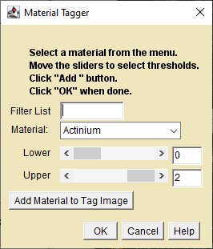

A plugin for creating a "tag" image using thresholding.
A tag image contains pixel values that point to a particular compound's name, formula and density in the DefaultMaterials.csv file. These properties are used by other plugins to compute the linear attenuation at that pixel position for any x-ray energy. Although they contain only whole number values, Tag images are 32-bit. See the MaterialsEditor page for more information about tags.

Material Tagger Dialog
Click on the image that you want to tag to make it the active window.
Select the Material Tagger plugin from the ImageJ plugins menu. A blank window will appear next to the active window.
Use the pull-down menu to select a specimen material from the Materials List.
Use the sliders to threshold select the range of pixel values to tag as the chosen material.
Click the "Add Material to Tag Image" to add the material to the tag image. Continue until all of the materials are tagged. Untagged materials are set to 0, "empty space" in the tag image.
Tags to MuLin
Requires MuMassCalculatorLib.jar
A plugin for converting a "tag" image to linear attenuation.
This plugin creates a new 32-bit image of linear attenuation from a tag image.
Tags To MuLin Dialog
Click on the tag image that you want to convert to make it the active window.
Select the Tags To MuLin plugin from the ImageJ plugins menu.
Enter the x-ray energy for the conversion.
Click OK to create a new image of linear attenuation.